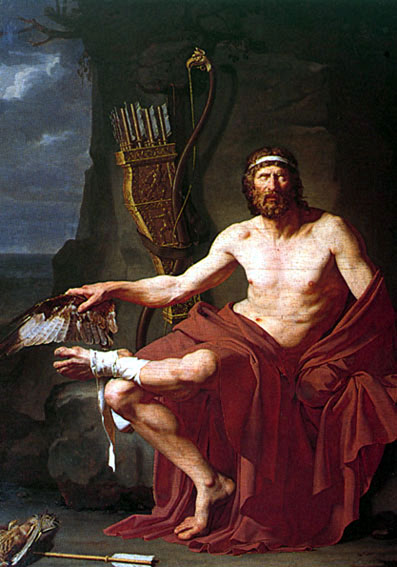
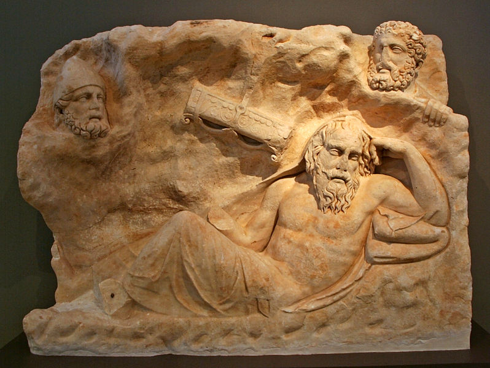

Filoctetes
De todos los guerreros griegos que partieron a la guerra de Troya, Filoctetes era notable no solo por su bravura, sino por la maravillosa herencia de la cual era poseedor: el arco y las flechas del mismísimo Hércules.
Pero este valiente guerrero sufrió un terrible percance en su camino a Troya. En un alto en el camino es mordido en el pie por una serpiente. La herida no es mortal, pero le provoca dolores, y expele un olor insoportable. La suma de las quejas y gritos de Filoctetes más el hedor de su herida provocan que sus compañeros, incitados por Ulises (Odiseo), decidan abandonarlo en la isla de Lemnos.

Durante diez años Filoctetes se lamenta día y noche, tanto de los dolores de su herida, como de la traición y el abandono del que ha sido objeto.
¡Diez años!
Filoctetes pasa diez años ¡quejándose, y solo! Solo en una isla en el Egeo.
Durante ese mismo tiempo sus compañeros luchan a las puertas de Troya sin lograr conquistar la ciudad. Un oráculo revela los requisitos para ganar la guerra. Es necesaria la presencia de Filoctetes y su prodigioso arco. No es el único requisito para conquistar la ciudad se exige la presencia en el campo de batalla de Neoptólemo, el joven hijo del fallecido Aquiles. Los aqueos encomiendan a Odiseo la misión, y este decide ir a buscar al joven en primer lugar, para usarle como mensajero y convencer al amargado Filoctetes de volver con ellos.
Al principio Neoptólemo decide tratar de convencer al viejo Filoctetes, pero duda también de las intenciones egoistas de Odiseo, y su corazón se ablanda al escuchar las quejas del guerrero herido. La cosa se complica, Odiseo interviene, pero hay rechazo, y parece que no existe manera de convencer a Filoctetes para que los acompañe a Troya. Cuando finalmente han decidido volver, y estando despidiéndose Neoptólemo de Filoctetes aparece milagrosamente Hércules, quien ha descendido del Olimpo con una instrucción para ambos:
“Sabe bien [Filoctetes] que te está señalado un destino honroso, y que gozarás de una vida gloriosa a cambio de tus males. Después que hayas llegado con éste a la ciudad troyana, curarás por de pronto de tu mal terrible, y elegido como el más bravo de todo el ejército, con ayuda de mis flechas arrancarás la vida a Paris, causante de estos males, y devastarás Troya.… Y a ti. Hijo de Aquileo te advierto también: no podrás abatir Troya sin él, ni él sin ti; antes bien, unidos como dos leones, no os separeis. Yo enviaré a Ilión a Asclepio, que te librará de tu mal: porque Ilión está destinada a que dos veces la tomen por mis flechas.”
Ambos quedan convencidos y comprometidos con el semidios, resueltos a viajar a Troya para cumplir el oráculo y la orden del hijo de Zeus. No sólo la herida de Filoctetes es curada por los hijos de Asclepio, sino que tal como profetizo el héroe sus flechas son las que matan a Paris, el principe troyano quien al raptar a Helena ha provocado toda esta guerra. El joven Neoptolémo es uno de los guerreros que se esconde en el famoso caballo con el que los griegos logran tomar finalmente la ciudad, y bueno, ya saben el resto de la historia (espero).
Hay muchas cosas que podemos aprender de esta historia, narrada magistralmente por Sófocles en una de sus tragedias, pero permítanme destacar una interpretación personal.
Filoctetes es el heredero de un don maravilloso, que engañado por un mal intencionado compañero, que además sufre una lesión, que ni siquiera es mortal, pero que él asume como una maldición o castigo de los propios dioses. Permite que sus colegas lo abandonen. Él que tiene la clave para la conquista de Troya decide hundirse en su autocompasión. En vez de enfrentar las adversidades, de enfrentar a sus compañeros, se queja amargamente todo el día, se siente maldito, miserable, y adolorido. Quizás no era tanto el hedor de la herida como el continuo rezongo el que hizo que sus compañeros decidieran abandonarlo, tras la incitación de Ulises.
¿Cuantos Filoctetes conocemos? ¿Cuantas veces hemos sido como él? ¿Por qué esperar diez años y la intervención divina para actuar? ¿Por qué no hacerse cargo de una vez de la propia vida, en vez de lamentarse tanto?
Que fácil es caer en una posición fatalista. Hay personas que se quejan de sus condiciones laborales, o que tienen mil problemas en la vida y que nadie les apoya, o les ayuda. Se quejan amargamente como Filoctetes, ignorando el poder que han heredado.
¿Estás aburrido de tu trabajo? Déjalo. ¿O será que el problema sea tuyo? Usa las maravillosas armas que has heredado, y ten cuidado, no vaya a ser que te abandonen en Lemnos. Hazte cargo de tu vida.
